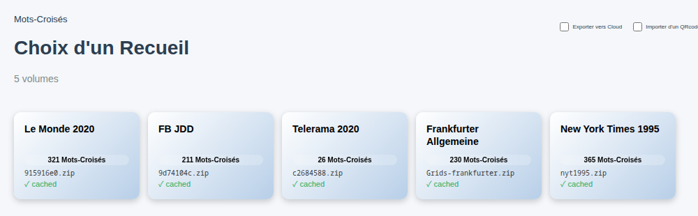
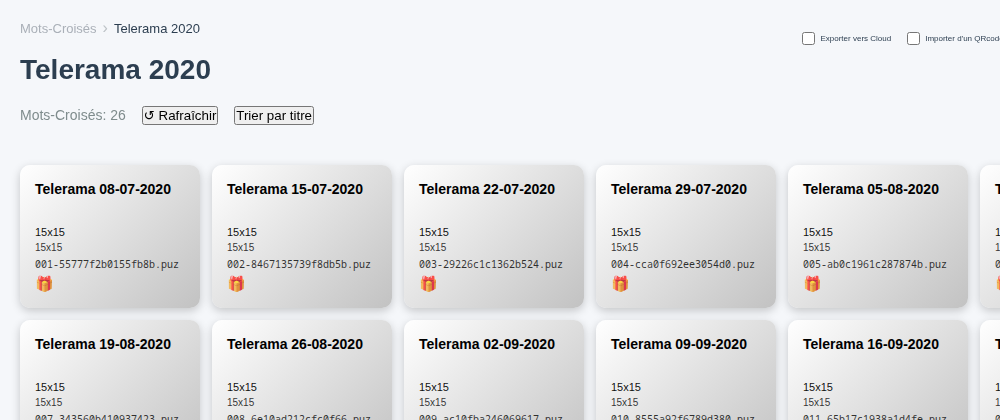
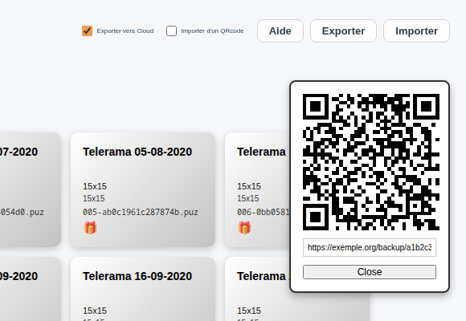

Fonctionnement général
Comment sont organisés les mots croisés, comment reprendre une grille là où vous l'avez laissée, et comment transférer votre progression d'un appareil à un autre.
Sur PC (portable, tour)
Raccourcis clavier, flèches, Tab, options, aides « lettre » et « mot ».
Sur mobile / tablette
Clavier virtuel, touches spéciales, mode liste / grille, statistiques.
1. Recueils et mots croisés
Les grilles sont rangées en deux niveaux :
- Le choix d'un recueil (page d'accueil). Chaque vignette est un volume : un titre (« Telerama 2020 », « New York Times 1995 »…), le nombre de mots croisés qu'il contient et le nom du fichier d'archive (
.zip). - Le choix d'un mot croisé dans le recueil ouvert. Chaque vignette indique le titre, l'auteur, la taille de la grille (ex.
15x15), le nom du fichier et votre avancement.


Un clic sur une grille l'ouvre dans un nouvel onglet : vous pouvez ainsi garder la liste ouverte et passer d'une grille à l'autre.
Les boutons de la liste
| Bouton | Rôle |
|---|---|
| ↺ Rafraîchir | Met à jour l'avancement de toutes les grilles (utile après avoir joué dans un autre onglet, ou après un import). |
| Trier par titre / Trier par fichier | Bascule entre le tri par nom de fichier (ordre d'origine du recueil) et le tri alphabétique par titre. |
| Exporter / Importer | Sauvegarde et restauration de votre progression — voir plus bas. |
| Aide | Cette aide. |
2. Les pastilles d'avancement
| Affichage | Signification |
|---|---|
| 🎁 | Grille jamais commencée. |
| En cours... | Grille commencée mais pas terminée (fond coloré BLEU). |
| Terminé | Grille terminée (fond coloré ROUGE). |
3. Jouer hors connexion
Au premier chargement, les archives des recueils sont copiées dans le navigateur ; une mention ✓ cached apparaît sur les vignettes concernées. Ensuite, vous pouvez jouer sans Internet (en avion, dans le train…).
- Sur ordinateur et sur mobile, vous pouvez aussi installer l'application (menu du navigateur : « Installer… » ou « Ajouter à l'écran d'accueil »).
- Seules les fonctions qui ont besoin du réseau sont indisponibles hors connexion : l'export vers le cloud et l'import par QR code. L'export et l'import par fichier fonctionnent toujours.
4. Où est enregistrée ma progression ?
Chaque lettre que vous saisissez est enregistrée automatiquement dans le navigateur de l'appareil que vous utilisez (stockage local). Sont conservés pour chaque grille : les lettres saisies, vos notes, le temps écoulé, le nombre de lettres révélées et d'erreurs, et l'état (en cours / terminé).
- Elle n'est pas partagée entre votre ordinateur et votre téléphone.
- Elle disparaît si vous effacez les données du site / l'historique, ou si vous jouez en navigation privée.
- Navigateurs différents (Chrome / Firefox) sur un même ordinateur = sauvegardes différentes.
5. Exporter ma progression
Le bouton Exporter (page d'accueil, en haut à droite) crée une copie de toute votre progression (toutes les grilles de tous les recueils) dans un seul fichier compressé.
a) Export vers un fichier (toujours fait)
Le fichier est téléchargé dans le dossier de téléchargements de votre appareil, avec un nom daté :
crosswords-2026-11-21-1430.bz2 (crosswords- année-mois-jour-heure+minutes.bz2)
Un bandeau temporaire « Saved to disk: nom du fichier » confirme l'opération (selon le navigateur, le téléchargement peut aussi apparaître dans sa barre de téléchargements). Conservez ce fichier où vous voulez : clé USB, messagerie, Drive, etc.
b) Export vers le cloud, avec lien et QR code (optionnel)
Cochez « Exporter vers Cloud » avant de cliquer sur Exporter. En plus du fichier local, la sauvegarde est envoyée sur un espace en ligne et NexPlay affiche :
- un QR code à scanner avec un autre appareil ;
- le lien de téléchargement (champ texte : un clic le sélectionne), copié automatiquement dans le presse-papiers si le navigateur l'autorise.

- Il faut être connecté à Internet (sinon : « Cloud failed: You are offline »).
- La taille du fichier est limitée (environ 5 Mo). Au-delà, l'envoi est refusé et le message « Erreur durant l'export cloud » s'affiche ; le fichier local, lui, est bien créé.
- Toute personne qui possède le lien peut télécharger la sauvegarde : ne le publiez pas.
- Le QR code et le lien sont faits pour un transfert immédiat. Pour une archive durable, gardez le fichier local.
6. Importer une progression
Le bouton Importer restaure une sauvegarde. Deux modes, selon la case « Importer d'un QRcode » :
| Case « Importer d'un QRcode » | Ce qui se passe au clic sur Importer |
|---|---|
| Décochée (par défaut) Fonctionne hors ligne | Une fenêtre de sélection de fichier s'ouvre : choisissez le fichier .bz2 (ou .br, .zip) précédemment exporté. |
| Cochée Nécessite Internet | Une fenêtre « Scanner un QRCode avec la caméra ou un screenshot » s'ouvre. Présentez la caméra devant le QR code affiché sur l'autre appareil, ou chargez une image/capture d'écran contenant le QR code. Le fichier est alors téléchargé depuis le lien et importé. Le bouton Abandon ferme le lecteur. |
Dans les deux cas, un message « Import terminé, OK pour recharger » apparaît ; après validation, la page se recharge : vos pastilles d'avancement sont à jour.
L'import fusionne : les grilles présentes dans la sauvegarde remplacent les versions locales de ces mêmes grilles ; les autres grilles de l'appareil ne sont pas touchées. Si vous avez avancé la même grille sur les deux appareils, c'est donc la version importée qui l'emporte. Au moindre doute, faites d'abord un Exporter sur l'appareil de destination.
.bz2 est téléchargé ; revenez ensuite à NexPlay et importez-le par fichier (case QR décochée).
7. Scénarios de transfert
A · Ordinateur ➜ téléphone, avec le QR code le plus rapide
Exporter + Cloud
Importer + QR
- Sur l'ordinateur : cochez Exporter vers Cloud, cliquez sur Exporter. Le QR code s'affiche.
- Sur le téléphone, ouvrez NexPlay, cochez Importer d'un QRcode, touchez Importer et autorisez l'accès à la caméra.
- Visez le QR code sur l'écran de l'ordinateur. Attendez « Import terminé », puis validez : la page se recharge avec votre progression.
B · Téléphone ➜ ordinateur, avec le QR code
Exporter + Cloud
Importer + QR
- Sur le téléphone : Exporter vers Cloud puis Exporter. Faites une capture d'écran du QR code (ou notez que le lien est déjà dans le presse-papiers).
- Transmettez la capture à l'ordinateur (messagerie, e-mail…). Si l'ordinateur a une webcam, vous pouvez aussi simplement présenter l'écran du téléphone devant elle.
- Sur l'ordinateur : cochez Importer d'un QRcode, cliquez sur Importer, puis choisissez l'image de la capture (ou utilisez la webcam).
C · Par fichier, sans cloud hors ligne possible
Exporter
(USB, mail, Drive…)
Importer
- Appareil 1 : Exporter (case cloud décochée). Repérez le fichier
crosswords-AAAA-MM-JJ-HHMM.bz2dans vos téléchargements. - Transférez-le sur l'appareil 2 : clé USB, pièce jointe, Drive/Dropbox, partage de proximité…
- Appareil 2 : Importer (case QR décochée) et sélectionnez le fichier. Sur mobile, le sélecteur de fichiers de l'appareil s'ouvre ; cherchez le fichier dans « Téléchargements » ou dans votre stockage en ligne.
D · Sauvegarde de sécurité sur le même appareil
Avant de vider le navigateur, de réinstaller l'application ou de changer de navigateur : Exporter d'abord. Ensuite, dans le nouveau navigateur ou après nettoyage, Importer le fichier pour tout retrouver.
| Méthode | Internet requis | Idéal pour | Identifiant du transfert |
|---|---|---|---|
Fichier .bz2 | Non | Sauvegarde durable, transfert sans réseau | Chemin du fichier (dossier Téléchargements) |
| Cloud + QR code | Oui | Passage rapide ordinateur ⇄ téléphone | QR code / lien affiché + copié |
8. Questions fréquentes
Mon import a échoué, pourquoi ?
- « Le format de fichier doit être zip, bz2, br » : le fichier choisi n'est pas une sauvegarde NexPlay.
- « Failed to process backup file » : fichier corrompu ou incomplet (téléchargement interrompu ?).
- En mode QR code : vérifiez la connexion, l'autorisation de la caméra et que le QR code est net et entier.
Je ne vois pas ma progression sur l'autre appareil.
C'est normal tant que vous n'avez pas fait un export puis un import (voir scénarios ci-dessus). Après l'import, cliquez éventuellement sur ↺ Rafraîchir.
Puis-je ajouter mes propres grilles ?
Oui, dans une grille ouverte, le menu Grille › Open… permet d'ouvrir un fichier PUZ, JPZ, XML, CFP ou iPUZ depuis votre appareil.